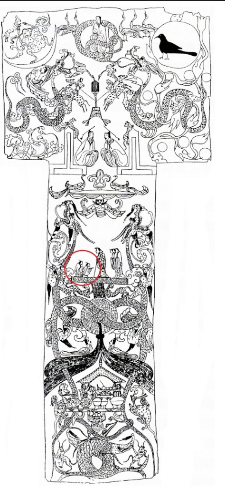

馬王堆一號漢墓 · 西漢
兩千一百多年前，長沙馬王堆漢墓裡出土了一幅畫在絲綢上的 T 形帛畫。 古人相信：人過世以後，靈魂會經過地下、人間，再升上天庭。
現在請你當小小探險家。圖上已經有一個紅圈——從那裡開始，找出神話裡的人物、動物、植物和寶物。
適合五年級課堂 · 約 20 分鐘 · 可點、可滑、可放大

魂兮歸來
你已經在帛畫上找到十二處神話細節。西漢的人用這幅畫告訴我們： 地下有神靈托住世界，人間有親人設宴送行，天上有日月與創世神在等候。
這不是嚇人的鬼故事，而是古人對「生命往哪裡去」最溫柔的想像。